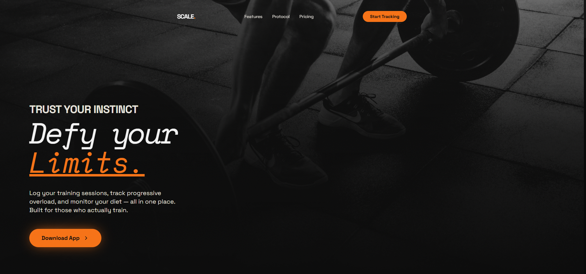
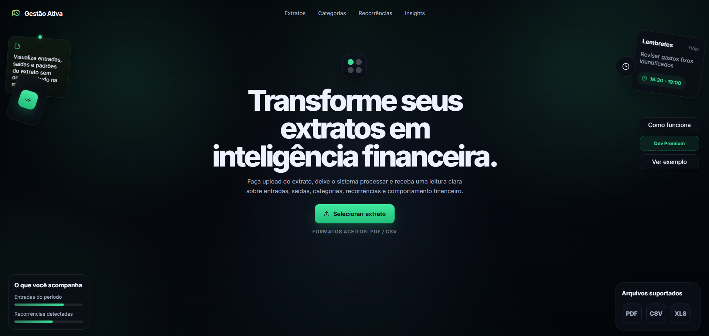
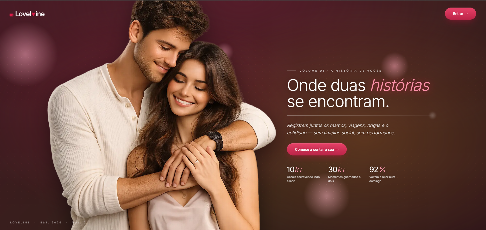
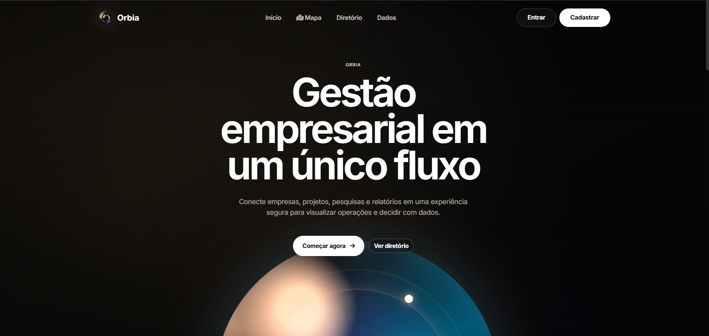
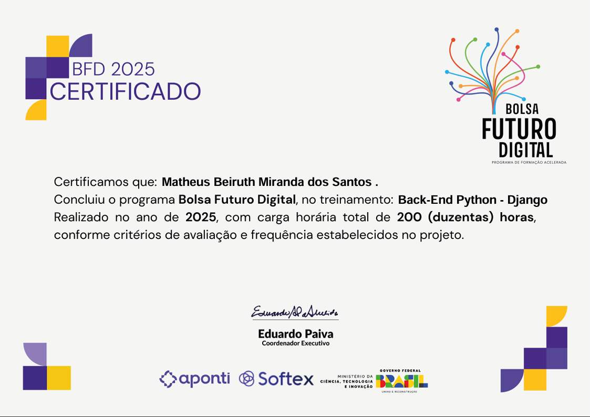
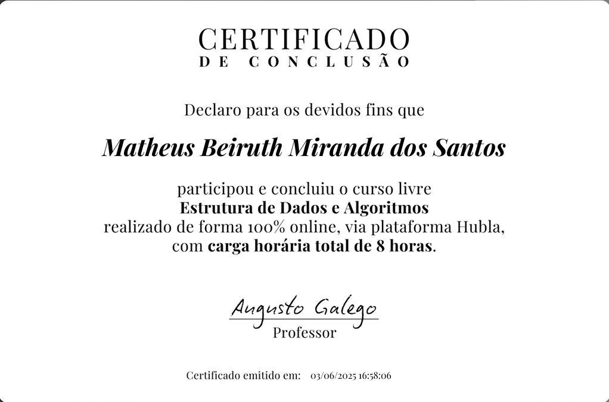
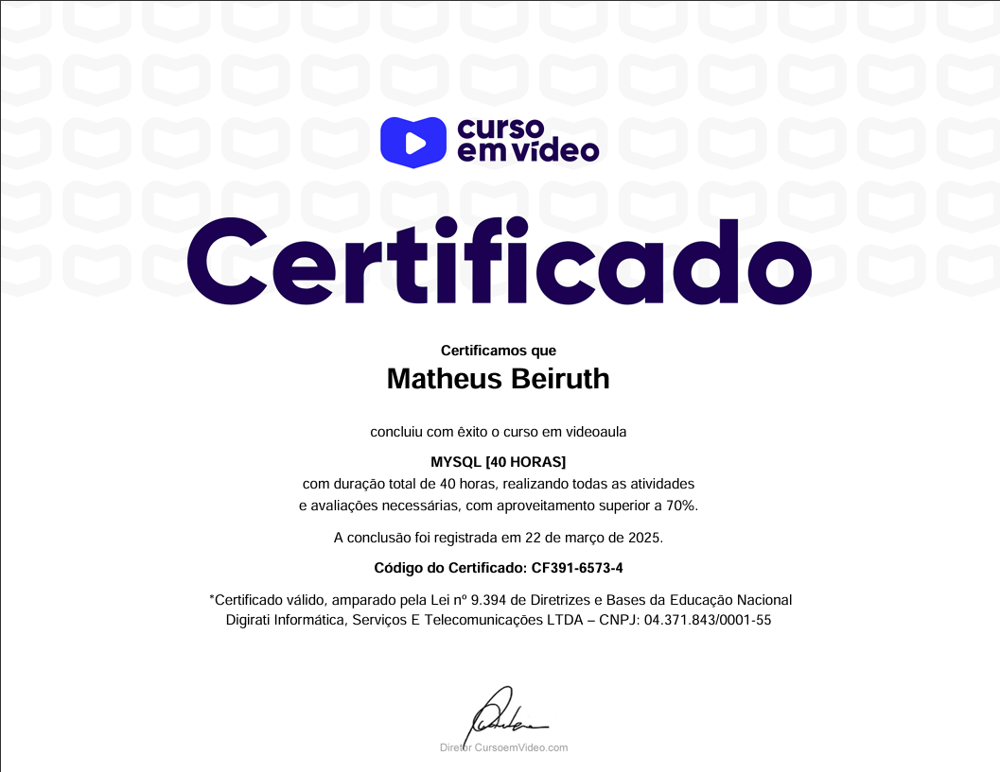

Engenheiro de software do Rio de Janeiro
Foco
Frontend, backend e sistemas
Momento atual
Buscando estágio ou posição júnior
Base
Maricá, Rio de Janeiro
Olá, eu sou Matheus Beiruth. Crio interfaces refinadas e sistemas confiáveis.
Estudante de Engenharia de Software no 8º período, unindo disciplina backend, cuidado com interface e visão de produto para entregar experiências limpas, rápidas e intencionais.
Stack atual
Java / Python / JavaScript
Status
Disponível para novas oportunidades

Construído em quatro camadas de execução.
Projetos selecionados
Ver todos os projetos
Projetos que transformam lógica complexa em experiências claras.

Uma página com linguagem visual mais agressiva e aspiracional, pensada para vender performance, disciplina e identidade de produto logo no primeiro impacto.

Um projeto focado em transformar informações operacionais em uma interface legível, com hierarquia clara para análise, acompanhamento e tomada de decisão.

Construído com atenção à sensação do produto: navegação leve, composição visual acolhedora e telas pensadas para reduzir ruído durante o uso.

Um projeto atual pensado para comunicar valor com uma interface limpa, reforçando estrutura, credibilidade e leitura rápida dos pontos principais.
Sobre
Engenharia, design e pensamento de produto no mesmo fluxo de trabalho.
Não me interessa entregar código que só funciona no papel. Meu melhor trabalho nasce quando estrutura backend, clareza visual e decisões de produto se reforçam mutuamente.
Isso significa sistemas mais limpos, interfaces com intenção e execução que respeita performance, manutenção e as pessoas que vão usar o produto do outro lado.
Matheus Beiruth
Estudante de Engenharia de Software · 8º período
Experiências claras, não apenas entrega técnica.
Sistemas legíveis, APIs com disciplina e manutenção no longo prazo.
Execução calma, iteração rápida e comunicação direta.
Experiência
Uma trajetória moldada por estudo, entrega e disciplina operacional.
Projetos independentes de software
Desenvolvimento de APIs backend, estudos de interface e simulações logísticas com foco em arquitetura, performance e clareza técnica.
Onshop.dmo · Freelancer
Trabalho remoto cobrindo operação com clientes, fluxo de vendas e atualização de estoque. Uma vivência prática de responsabilidade, consistência e comunicação.
Prefeitura de Maricá · Freelancer temporário
Atuação de apoio em operações de eventos públicos e supervisão durante períodos de carnaval, trabalhando sob pressão e coordenação em tempo real.
Bacharelado em Engenharia de Software
Universidade de Vassouras, com foco em estruturas de dados, engenharia de requisitos e fundamentos de sistemas distribuídos.
Especialidades
O que eu gosto de construir quando o nível de exigência sobe.
Web
Interfaces com hierarquia mais forte, espaçamento melhor e lógica de interação mais limpa.
Apps
Fluxos mobile-first e estudos de UI onde polimento e legibilidade importam.
Marca
Presença digital com autoria, refinamento premium e intenção visível em cada detalhe.
Sistemas
APIs, lógica de dados e fluxos backend pensados para continuarem compreensíveis conforme a complexidade cresce.
Tecnologias
Ferramentas que eu uso entre produto, backend e entrega.
Certificações
Reconhecimentos que validam o estudo e a prática contínua.

Desenvolvimento Back-End
Foco na criação de APIs estruturadas, arquitetura limpa e manutenção escalável.

Lógica e Algoritmos
Fundamentos matemáticos e pensamento analítico aplicados na resolução de problemas.

Bancos de Dados MySQL
Estruturação de dados relacionais, normalização, consultas complexas e performance.
Sinais de confiança
Uma seção honesta, sem inventar validações que não existem.
Prova pública
GitHub, portfólio e currículo
O sinal mais forte aqui é trabalho verificável: projetos, histórico de código e um portfólio construído para mostrar processo tanto quanto estética.
Disciplina de freelancer
Operação, atendimento e confiabilidade
O trabalho freelancer no mundo real me ensinou consistência, responsabilidade e como manter a calma quando execução importa mais do que teoria.
Filosofia de construção
Senso de produto com estrutura de engenharia
Eu me importo com como o software é percebido no uso, como ele se sustenta com o tempo e com a clareza que ele oferece para a próxima pessoa que tocar nele.
CTA final
Vamos trabalhar juntos.
Se você procura alguém que pense interface, backend e qualidade de produto ao mesmo tempo, vamos conversar.